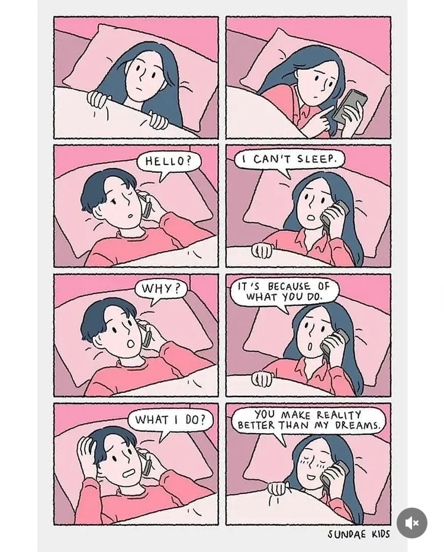

Bugün aşk hakkında gerçeği söyleyeceğim aşkım. Dürüst olmak gerekirse, sadece iki ay oldu ama sanki bir yıl geçmiş gibi hissediyorum. Seninle zaman yavaş geçiyor ama daha tutkulu ve harika. Yakında sınavlarınla yüzleşeceğiz, ama unutma, kocan her zaman yanında. Başaracağına inanıyorum. Sen ve ben, birlikte güzel zamanlar geçireceğiz, sadece zaman meselesi. Ne olursa olsun o gün gelecek. O gün bana sarılacaksın ve seni kollarımda taşıyacağım... ve sonsuza kadar birlikte yaşayacağız.
Hayat her zaman mükemmel değildir, bazen kolayca ağlarız ya da üzülürüz. Duygular bizi deli eder, yakınlarımız canımızı acıtır, bazen bu kişi bir aile üyesi bile olabilir. Ama bir gün biri bana şunu dedi: “Hayatta bazı insanlar vardır, ne akraban ne de okuldan tanıdık ama seninle öyle bir bağ kurarsın ki, onların kollarında olmak istersin. O his o kadar güçlüdür ki, ruhun onların varlığını ister.” Çünkü o kişi, bu dünyadaki herkesten daha çok senin duygularını önemser.
Düşünceler açlık gibidir. Açken yemek yediğinde bütün acılarını unutursun, aynı şekilde düşüncelerini sevdiğine açtığında, kötü bir günü güzel bir güne dönüştürebilir. Ama bazı düşünceler vardır, inatla kalır ve bizi aşağı çeker. Birbirimizin kalbini koruyacağımıza söz verdik. Yavaş yavaş kalbimizin parçalarını onarıyoruz. Ama o anılar orada durdukça, tamamen iyileşmek zor olur. Gel geçmişi, acıları, kötü insanları tamamen unutalım. Onlar bizi düşünmüyor bile, yaptıkları için pişman bile değiller. Eski sevgilimi düşünmeye zaman harcayamam. Onlar duygularımızla ve zamanımızla oynadı. Bugün kırıldıysak, onların yüzünden. Onlara fırsatlarını kaçırdıklarını gösterelim. Onlara bizim daha iyisini bulduğumuzu ve onlarsız güçlü olduğumuzu gösterelim. Onlara kaybettiklerine pişman olmayı öğretelim. Birlikte sadece şu düşüncelerimiz olsun: "Gizem? Philip? gelecek? üniversite? Peggy? evlilik? yaşlanmak?" İlişkimiz bu şekilde büyüsün istiyorum. Geçmişi değiştiremeyiz ama geleceğimizi şimdi inşa ediyoruz...

Bu günlerde çok bunaldığını biliyorum, aile, okul ve diğer her şey... Ama bir şeyden eminim: Ne olursa olsun, eğer kocana ihtiyacın olursa ben buradayım. 17 Nisan gecesi bunu gördük. Ruh halini anladım ve ilişkimizin en güzel gecelerinden birini yaşadık. İnsanız, bazen iyi olmamamız normal. Şanslıyız, birlikteyiz ve birbirimize destek oluyoruz, her şey daha kolay geçiyor. Bir de bir Philip’i olmayanları düşün... hayat onlar için ne kadar zor olurdu?
Zor günler gelecek, stresli günler, problemler, duygusal anlar olacak ama güzel geçen günleri asla unutma. Güldüğümüz günleri, “je t’aime” dediğimiz günleri, göz göze bakıp geleceği gördüğümüz anları unutmayalım. Birbirimize kavuşmayı dilediğimiz günleri ve Tanrı’nın bizi buluşturduğu anı... Haydi bu hayatı birlikte, karı koca olarak yapacağımız harika bir yolculuğa çevirelim...
O güzel anlar gelecek, buna eminiz. Mükemmel aşk yoktur. Televizyonda veya sokakta gördüğümüz yaşlı çiftler bile bir zamanlar kavga etti, kızdı, denedi ve o anlarda birbirine destek oldu. Üzgün ya da kızgın olduğumuzda birbirimize destek olalım. Birlikte olalım, birbirimize kolaylık sağlayalım. Kontrol altında veya değil, üzgün ya da öfkeli... Biz bir takımız, aynı gemideyiz. Zor anlar olacak ama Tanrı’dan yardım isteyelim ve her zaman birbirimize ait olduğumuzu bilelim.
Yürürken, bir şey görürken, gelecekte bir anıya dönüşebilecek yerleri gördüğümde hep seni hissediyorum. Sen de bunu bana söyledin. Derste bile beni düşünüyorsun. Birbirimizi kendimizden çok düşünüyoruz. Sadece bir hayal et aşkım; henüz yüz yüze gelmedik ama bu aşkın seviyesi sokakta gördüğümüz birçok çiftten daha güçlü. Bir de aynı yerde olduğumuzu hayal et... bu aşk ne kadar büyük olurdu...

Aşk malzeme, imkan, seks, yarış ya da oyun değildir. Aşk, iki insanın hayatın partneriyle daha parlak ve anlamlı olduğunu fark etmesidir. Birlikteliğin amacı, gerçeği rüyadan daha güzel hale getirmektir. Zor olanı kolaylaştırmak, karanlık düşünceleri aydınlığa çevirmek, yeni anılar yaratmak ve hayatın her saniyesini kalbinin en tepesinde sevdiğin kişiyle yaşamaktır. Aşkın anlamı işte budur...
Bazen birbirimizi anlamadığımızı biliyorum ama hâlâ birbirimizi seviyoruz aşkım. Bu, aşkın en büyük işareti değil mi zaten? Bu ilişkiye odaklanacağız, adapte olacağız, öyle ki bir gün sadece gözlerimizle konuşabileceğiz. Zaman ve sevgiyle... sadece bu şekilde o gün gelecek. Şu an bile öyle bağlıyız ki, gökyüzü bile aşkımıza dar geliyor...

Uzağımda olduğumu biliyorum, şu an yanında olmamı istiyorsun, zor zamanlar geçiriyorsun, hissediyorum çünkü ben de aynısını yaşıyorum. Ama emin olduğum bir şey var: Seni dört yıl bekleyebilirim. Uzun olabilir ama imkansız değil. Bu aşkı her gün büyütüyoruz. Buluştuğumuzda ilk kez olacak ama iki yılın deneyimine sahip olacağız. Birbirimizi çok iyi tanıyacağız. Sadece sevgimizi göstereceğiz, birlikte yaşayacağız, seyahat edeceğiz ve sonra Peggy’mizi yapıp hayatımızı kuracağız. Sadece güçlü olalım, güvenelim ve sevelim...
İlişki budur. Her gün Tanrı’nın verdiği nefes, birlikte en iyi anları yaşamak için bir fırsattır. Sen de söyledin; insanız, her şey olabilir. Haydi birbirimizin yanında olalım ve her günü bu aşkı daha da büyütmek için kullanalım... tekrar, tekrar, tekrar... ta ki bu sevgi patlayana kadar, sevinç ve mutlulukla!
Bunu hissettiğini biliyorum. Bu iki ayın birbirimiz için ne kadar harika geçtiğini biliyorum. En iyi halimizin birlikte olduğumuzda olduğunu sen de biliyorsun. Yanında olduğumda dünya huzurlu oluyor, problemler kayboluyor. Bu bir tedavi gibi... ama şeker tadında. Bu gezegende hiçbir ilaç birlikte hissettiğimiz şeyle kıyaslanamaz...
Bu dünyada hepimiz birer yolcuyuz. Bazıları avantajlı, bazıları iyi konumda, bazıları travmalı ya da kötü geçmişe sahip... ama emin olduğum bir şey var: Ruh eşleri gerçekten var. Seni anlayan, seven, seni güçlü ve değerli hissettiren biri. Hayatını bir peri masalına çeviren... Senin için o adam olmak istiyorum karım. Sen ve ben... 20, 30 hatta 50 yıl sonra bile birbirimize “je t’aime” dersek, Tanrı’ya bizi buluşturduğu için verebileceğimiz en güzel teşekkür olurdu...
Seni 27 Şubat'ta sevdim
Seni 27 Mart'ta sevdim
Bugün de seni seviyorum
Yarın da seveceğim
Ve sonsuza kadar seveceğim...
Gizem Lelo... karıcım..